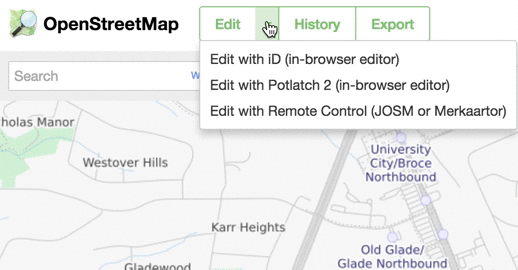
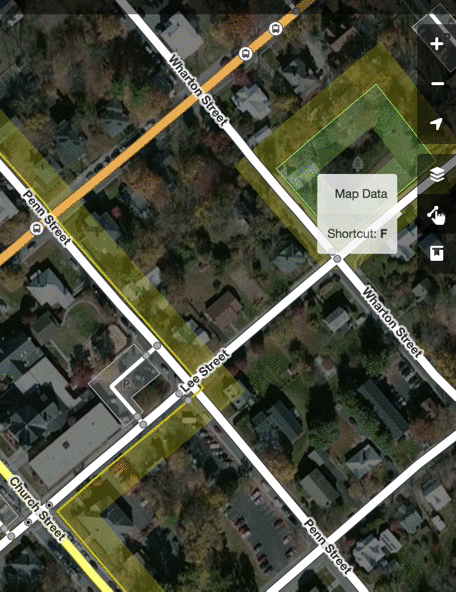
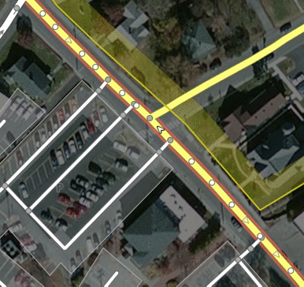
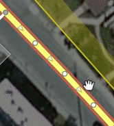
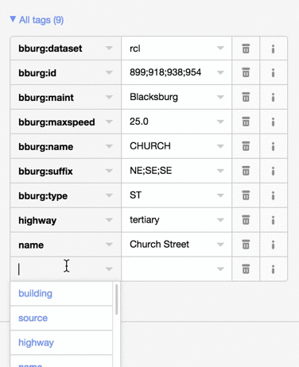

Here are some instructions on how to use the OpenStreetMap web browser editor (iD) to map parking areas in the New River Valley.
Here's how to get started with the iD editor you can use from your web browser
I'll assume you already have an OpenStreetMap account and that you've signed in. To get started with editing, just click on the Edit button or select the iD editor from the dropdown menu.
You can select satellite imagery from a number of different providers from the "Background" menu on the right-hand side of the screen, but unfortunately, none of them are very up to date.
You might want to turn visibility for certain features off so the map isn't quite so cluttered. Uncheck the features you don't want visible from the map data menu on the right. For working with parking, I like to just have Roads and Landuse Features (which includes parking areas) turned on.
The first thing you may need to do is split a road segment up. When you click on a road, it'll be outlined in red, and you may notice that your highlighted segment goes across several blocks. You'll want to split these up either before or after you add parking information. If the parking is identical for all of the segments, you can add the tags first that way when you split the road the tags will be copied to each of the split segments. If the parking is different, go ahead and split the segments and enter the tags individually.
To split a road segment, first click the segment, then find a node where you want to split it, typically right at the intersection, and click on it. You should see a popup menu with a pair of scissors. Clicking the scissors will split the road segment at the node that you clicked. You can now select either side of the road and tag/edit it individually!
Next, we want to tag the road segment as having parking on one or both sides. If there is parking available on both sides of the road, then all your tags will use the keyword "both". If it only has parking on one side, you need to determine whether it is the "left" or the "right".
Click on the road to highlight it. Now look closely and you should see little triangle arrows indicating the
direction of the road.

This doesn't have anything to do with traffic flow (ie it doesn't mean it is a one-way street),
but rather just tells us which way the road data is input into OSM. Use the direction of the arrow to determine
whether the parking is on the left or the right side of the road!
Once you determine whether parking is on the left, right, or both sides of the road, go ahead and add a tag. Look
for the fields on the left side of the screen, and scroll down to the "All tags" section (expand it if necessary).
Click the + button at the bottom to add a new tag.

To start, just add the tag key of parking:lane:direction (e.g. parking:lane:both). The value of this
tag should describe the parking as one of the following:
Almost all parking in Blacksburg will probably be parallel or marked. It should also be noted that you can add multiple tags if the parking differs on the right and left side of the road. So, if the left side has marked parking, and the right side has unmarked parallel parking, you would want to add a separate tag for each rather than using the "both" direction.
Now we're going to add some info about the parking itself. Again, be sure to reference the appropriate side of the road in your tag keys. Here are the tags you may need to add (using "left" as the example direction):
If you'd like to read a little more about where these standardized tags came from, check it out on the OSM wiki.
There is an example of a completed parking lane along College Ave just off Main St. Use the query tool to see all of the tags that have been added. Please note, the road along that block has been split into multiple segments to help better indicate where the parking is located along College Ave.